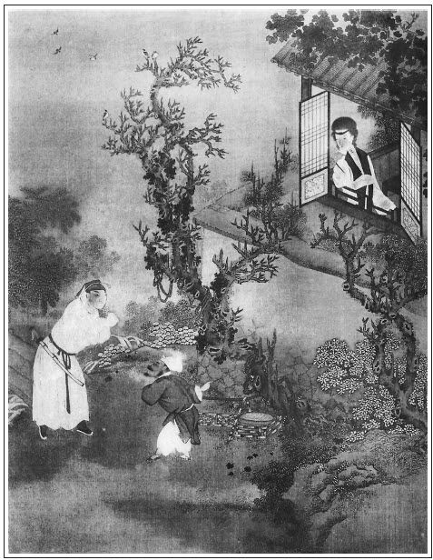

張回此書單重財色，故卷首一詩，上解悲財，下解悲色。
一部炎涼書，乃開首一詩並無熱氣。信乎作者注意在下半部，而看官益當知看下半部也。
「二八佳人」一絕，色也。借色說入，則色的利害比財更甚。下文「一朝馬死」二句，財也；「三杯茶作合」二句，酒也；「三寸氣在」二句，氣也。然而酒、氣俱串。入財、色內講，故詩亦串入。小小一詩句，亦章法井井如此，其文章為何如？
開講處幾句話頭，乃一百回的主意。一部書總不出此幾句，然卻是一起四大股，四小結股。臨了一結，齊齊整整。一篇文字斷落皆詳批本文下。
上文一律、一絕、三成語，末復煞四句成語，見得癡人不悟，作孽於酒色財氣中，而天自處高聽卑，報應不爽也。是作者蓋深明天道以立言歟？《金剛經》四句，又一部結果的主意也。
嘗看西門死後，其敗落氣象，恰如的的確確的事。
亦是天道不深不淺，恰恰好好該這樣報應的。每疑作者非神非鬼，何以操筆如此？近知作者騙了我也。蓋他本是向人情中討出來的天理，故真是天理。然則不在人情中討出來的天理，又何以為之天理哉！自家作文，固當平心靜氣，向人情中討結煞，則自然成就我的妙文也。
一部一百回，乃於第一回中，如一縷頭髮，千絲萬絲，要在頭上一根繩兒紮住；又如一噴壺水，要在一提起來，即一線一線同時噴出來。今看作者，惟西門慶一起來，即一線一線同時噴出來。今看作者，惟西門慶一人是直說，他如出伯爵等九人是帶出，月娘三房是直敘，別的如桂姐、玳安、玉簫、子虛、瓶兒、吳道官、天福、應寶、吳銀兒、武松、武植、金蓮、迎兒、敬濟、來興、來保、王婆諸色人等，一齊皆出，如噴壺傾水。然卻是說話做事，一路有意無意，東拉西扯，便皆敘出，並非另起鍋灶，重新下米，真正龍門能事。若夫敘一人，而數人於不言中躍躍欲動，則又神工鬼斧，非人力之所能為者矣。何以見之？如教大丫頭玉簫拿蒸酥是也。夫丫頭，則丫頭已耳，何以必言大丫頭哉？春梅固原在月娘房中做小丫頭也，一言而春梅躍然矣。真正化工文字。
此回內本寫金蓮，卻先寫瓶兒。妙絕。
寫春梅，用影寫法；寫瓶兒，用遙寫法；寫金蓮，用實寫法。然一部《金瓶》，春梅至「不垂別淚」時，總用影寫，金蓮總用實寫也。
寫春梅，何不於首卷內直出其名哉？不知此作者特特為春梅留身份故也。既為丫鬟，不便單單拈出，勢必如玉簫借拿東西、或傳話時出之，如此則春梅掃地矣。然則俟金蓮進門，或雲用銀自外邊買來亦可。不知一部大書，全是這三個人，乃第一回時，如何不點出也？看他於此等難處，偏能不費絲毫氣力，一筆勾出，且於不用一筆處勾出。不知其文心是天仙，是鬼怪。看者不知，只說是拿東西賞天福，豈不大差！
未出月娘，乃先插大姐，帶出敬濟，是何等筆力！
出敬濟，止云「陳洪子」可耳，乃必云「東京八十萬禁軍楊提督」者，見蔡太師、翟雲峰門路，皆從此一線出來。然則又於無筆墨處，將翟雲峰、蔡太師等一齊點出矣。後文來保賂相府時，必云「見楊府干辦從府內出來」，進見蔡攸必云「同楊干辦一齊來」，則此句出蔡京、翟雲峰等益信矣。文章能事，至《金瓶梅》，真山陰道上，應接不暇，七通八達，八面玲瓏，批之不盡也。
《金瓶》內，每以一筆作千萬筆用。如此回玉皇廟，謂是結弟兄；謂是對永福寺，作雙峙起結；謂是出武松，謂是出金蓮；謂是籠罩「官哥寄名」，「瓶兒薦亡」等事也。總之一筆千萬用，如神龍天際，變化不測的文字。
一回「冷」、「熱」相對兩截文字，然卻用一筍即串攏，痕跡俱無。所謂筍者，乃在玉皇廟玄壇座下一個虎，豈不奇絕！
一回兩股大文字，「熱結」「冷遇」也。然「熱結」中七段文字，「冷遇」中兩段文字，兩兩相對，卻在參差合筍處作對鎖章法。如正講西門慶處，忽插入伯爵等人，至「滿縣都懼怕他」下，忽接他排行第一，直與「複姓西門，單名一個慶字」合筍，無一線縫處。正講武松遇哥哥，忽插入武大別了兄弟如何如何許多話來，下忽云「不想今日撞著自己嫡親兄弟」，直與「自從兄弟分別之後」合筍，無一縫處。此上下兩篇文字對峙處也。
無心撞著，卻是嫡親兄弟；有心結識，反不好敘齒。掩映處最難過，最難堪。
「熱結」處，何以有七段文字？自「大宋徽宗」至「無不通曉」是一段；自「結識的」至「都懼怕他」是兩段；自「排行第一」至「又去調弄婦人」是三段；自「西門慶在家閒坐」至「只等應二來與他說」是四段；自「正說著」至「伯爵舉手和希大一路去了」是五段；自「十月初一」至「過了初二」是六段；自「次日初三」至「和子虛一同來家」是七段。此是「熱結」的文字已畢，下文則「冷遇」的文字了。切勿認應伯爵來邀看虎，猶是西門慶邊的文字。
「冷遇」兩段，則一段是武大的文字，一段是金蓮的文字。伯爵兩人，看去固是引子，即武松打虎見官諸事，亦是信藥也。
看他寫「熱結」處，卻用漸漸逼出。如與月娘閒話，是一頓；伯爵、希大來相約而去，是一頓；初一日收分資，是一頓；初二日知會道士，是一頓，初三日吃早飯，又是一頓；至廟中調笑，又是一頓。才說吳道士請燒紙，而伯爵謙讓，又作數層刷洗方入本題。若「冷遇」，卻是一撞撞著，乃是嫡親兄弟。便見得一假一真，有安排不待安排處。
描寫伯爵處，純是白描，追魂攝影之筆。如向希大說「何如？我說……」，又如「伸著舌頭道：爺……」。儼然紙上活跳出來，如聞其聲，如見其形。
《水滸》上打虎，是寫武松如何踢打，虎如何剪撲；《金瓶梅》卻用伯爵口中幾個「怎的」「怎的」，一個「就像是」，一個「又像」，便使《水滸》中費如許力量方寫出來者，他卻一毫不費力便了也。是何等靈滑手腕！況打虎時是何等時候，乃一拳一腳，都能記算清白，即使武松自己，恐用力後，亦不能向人如何細說也。豈如在伯爵口中描出為妙。
篇內出月娘，乃云「夫主面上百依百順」。看者止知說月娘賢德，為後文能容眾妾地步也；不知作者更有深意。月娘，可以向上之人也。夫可以向上之人，使隨一讀書守禮之夫主，則刑於之化，月娘便自能化俗為雅，謹守閨範，防微杜漸，舉案齊眉，便成全人矣。乃無知月娘止知依順為道，而西門之使其依順者，皆非其道。月娘終日聞夫之言，是勢利市井之言，見夫之行，是奸險苟且之行，不知規諫，而乃一味依順之，故雖有好資質，未免習俗漸染。後文引敬濟入室，放來旺進門，皆其不聞婦道，以致不能防閒也。送人直出大門，妖尼晝夜宣卷，又其不聞婦道，以致無所法守也。然則開卷寫月娘之百依百順，又是寫西門慶先坑了月娘也。泛泛讀之，何以知作者苦心？
作者做月娘，既另出筆墨，使真欲做出一個賢女婦人，後文就不該大書特書引敬濟入室等罪；既欲隱隱做他個不好的人，又不該處處形其老實。然則寫月娘，信如上所云「一個可以學好向上的人」，西門慶不能刑於，遂致不知大禮，如俗所云「好人到他家，也不好了」也。故「百依百順」，是罪西門，非贊月娘。
寫月娘，何以必雲是繼室哉？見得西門慶孤身獨自，即月娘妻子尚是個繼室，非結髮者也。故其一生動作，皆是假景中提傀儡。
寫月娘惡處，又全在繼室也。從來繼室多是好好先生。何則？因彼已有妻過，一旦死別，乃續一個入來，則不但他自己心上怕丈夫疑他是填房，或有兒女怕丈夫疑他偏心，當家怕丈夫疑他不如先頭的，即那丈夫心中，亦未嘗不有此幾著疑忌在心中。故做繼室者，欲管不好，不管不好，往往多休戚不關，以好好先生為賢也。今月娘雖說沒甚奸險，然其舉動處，大半不離繼室常套。故「百依百順」，在結髮則可，在繼室又當別論，不是說依順便是賢也。是四字，又月娘定案，又繼室定案。
寫西門對子虛，卻句句是瓶兒；寫子虛來入會，卻又處處是瓶兒。西門心照那邊，瓶兒心照這邊，已將兩人十分異樣親密處，寫得花團錦簇，好看殺人。真有筆不到而意到之妙。
凡人用筆曲處，一曲兩曲足矣，乃未有如《金瓶》之曲也。何則？如本意欲出金蓮，卻不肯如尋常小說云「按下此處不言，再表一個人，姓甚名誰」的惡套。乃何如下筆？因思從兄弟「冷遇」處帶出金蓮；然則如何出此兩兄弟？則用先出武二；如何出武二？則用打虎；如何出打虎？是依舊要先出武二矣。不則依舊要按下此處，再講清河縣出示拿虎矣。夫費如許曲折，乃依舊要按下另講，文章之夯，亦夯不至此。不知作者乃眼覷一處矣。何則？玉皇廟固黃河發源之所，瓶兒既於此處出，金蓮能不於此處出哉！故一眼覷見玉皇廟四大元帥，作者不覺擱筆拍案大笑也。然而其下筆時，偏不即寫玄壇，乃先寫老子青牛，又寫二重殿，又寫側門，又寫正面三間廠廳，又寫昊天上帝，又寫紫府星官，方出四大元帥。文至此，所謂曲折亦曲折盡矣。看他偏不即寫玄壇，乃又先寫馬元帥，帶出幫閒討好，使本文「熱結」中意思柳遮花映，八面玲瓏。至此該寫趙元帥矣，偏又不肯寫下，又放過趙元帥，再寫溫元帥，又照入幫閒身份，放倒自己，奉承他人。使「熱結」本文不脫生，十分美滿後才又插轉玄壇，玄壇身邊，方出畫虎。曲折至此，該用吳道官說出真虎矣，乃偏又漾開，偏又照管眾幫閒，點染「熱結」本文，方用吳道官一點真虎。夫所謂打虎之人，尚杳然不知音信。止因一個畫虎，便如此曲折，真不怕嘔血，不怕鬼哭。文至此，可雲至矣。看他偏有力量，偏又照入打虎情景；在白賚光口中，偏又令伯爵又插一笑談，花遮柳映，又照入「熱結」本文來。夫寫一面照一面，猶全人所能，乃於寫這一面時，卻是寫那一面，寫那一面時，卻原是寫這一面。七穿八達，出神入化，所不怕嘔血，不怕鬼哭，是真不怕嘔血鬼哭者矣。蓋人一手寫一處不能，他卻一手寫三四處也。玉皇廟是一處，十弟兄是一處，道士是一處，畫虎是一處，真虎是一處，打虎人又遙在一處，躍然欲動，而滄州郡且明明說出也。後生家看此等文字，而不心灰氣絕，回家焚燒筆硯，再不敢做文者，是必目不一丁，賣菜傭不如之人也。
夫不有子虛，則瓶兒歸西門是無孽之人矣，故必有子虛；然子虛不雖有如無，則瓶兒又何以歸西門？是故子虛是個影子中人。今於影子中人上場，不加一番描寫渲染，則何以見其為影子中人哉？故日於排次第時見之矣。何則？若論勢字當從財生，西門慶家不是世代閥閱，止因有幾貫錢，方能使勢也。夫既以錢為主，子虛之錢較西門為加倍，如此應該子虛為大。乃不但不能僭西門之左，且不能居應謝二人之上；而應謝二人，明明知其財主，亦絕不相讓，則子虛為雖有如無之人不言已喻。而財必至為他人之財，妻必至為他人之妻，此時已定局矣。故無論他盈千累萬的家財，必先看他有好兒子沒有，才定得是他的不是他的。文字妙處，全要在不言處見。試問看官：有幾個看沒字處的人否？
一回內句句「三娘」，而玉樓亦躍躍紙上，此所開缺候官之法也。
寫虎一段，自入三間廠廳內，一引入，一漾開，凡三四折，方入吳道官。文字又如穿花蝴蝶，一遠一近，煞是好看殺人。
「熱結」文字，卻以花二娘起，花二娘結，而月娘作引，卓二姐作餘波。人只謂下文是瓶兒先講起，不知一渡即是金渡文字。作者之筆其如龍乎！看他每不肯為人先算著。
西門慶「沉吟一會」，乃說出花子虛來。試想其沉吟是何意思？直與九回中武二沉吟一會相照。西門一沉吟，子虛死矣。武二一沉吟，李外傳、王婆、金蓮俱死矣，而西門慶亦死矣。然武二沉吟是殺人，西門沉吟是自殺。
寫金蓮，云「不知這婦人是個使女出身」，後文瓶兒出身，又是「梁中書侍妾」，春梅不必說矣。然則三人大抵皆同。作者蓋深惡此等人，亦見婢妾中邪淫者多也。
冷遇哥嫂文中，乃一云「嫡親兄弟」，再云「是我一母同胞兄弟」，再云「親兄弟難比別人」。句句是武二文字，卻句句是敲擊十兄弟文字也。
篇內金蓮凡十二聲「叔叔」，於十一聲下，作者卻自入一句，將上文個一聲「叔叔」一總，下又拖一句「叔叔」，便見金蓮心頭眼底口中，一時便有無數「叔叔」也。益悟文章生動處，不在用筆寫到之處。
開卷一部大書，乃用一律、一絕、三成語、一諺語盡之，而又入四句偈作證，則可雲《金瓶梅》已告完矣。
《水滸》本意在武松，故寫金蓮是賓，寫武松是主。
《金瓶梅》本寫金蓮，故寫金蓮是主，寫武松是賓。文章有賓主之法，故立言體自不同，切莫一例看去。所以打虎一節，亦只得在伯爵口中說出。
「里仁為美」，況近鄰哉！今子虛不善擇鄰，而與西門為鄰，卒受其禍；武大與王婆為鄰，亦卒受其禍；殆後瓶兒與金蓮鄰牆，又卒受其禍。甚矣，卜鄰當慎也！
詩曰：
張旁上解空去財：
豪華去後行人絕，簫箏不響歌喉咽。
雄劍無威光彩沉，寶琴零落金星滅。
張旁下解空去色：
玉階寂寞墜秋露，月照當時歌舞處。
當時歌舞人不回，化為今日西陵灰。繡眉一部炎涼境況，盡此數語中。
又詩曰：
二八佳人體似酥，腰間仗劍斬愚夫。繡旁不是愚夫，儘是貪夫。
雖然不見人頭落，暗裡教君骨髓枯。

這一首詩，是昔年大唐國時，一個修真煉性的英雄，入聖超凡的豪傑，到後來位居紫府，名列仙班，率領上八洞群仙，救拔四部洲沉苦一位仙長，姓呂名巖，道號純陽子祖師所作。單道世上人，營營逐逐，急急巴巴，跳不出七情六慾關頭，打不破酒色財氣圈子。到頭來同歸於盡，著甚要緊！張夾以上總起四字，借一呂純陽作開講，奇絕。所以有後文吳神仙、黃真人、潘道士也。雖是如此說，只這酒色財氣四件中，惟有「財色」二者更為利害。怎見得他的利害？假如一個人到了那窮苦的田地，受盡無限淒涼，耐盡無端懊惱，晚來摸一摸米甕，苦無隔宿之炊，早起看一看廚前，愧無半星煙火，妻子饑寒，一身凍餒，繡眉情景逼真，酸徠談此，能不雪涕！就是那粥飯尚且艱難，那討餘錢沽酒！繡旁酒因財缺。更有一種可恨處，親朋白眼，面目寒酸，便是凌雲志氣，分外消磨，怎能夠與人爭氣！繡旁氣以財弱。張夾以上反起財。正是：張夾這一個正是，是冷。
一朝馬死黃金盡，親者如同陌路人。張夾財箴。
到得那有錢時節，揮金買笑，一擲巨萬。思飲酒真個瓊漿玉液，繡旁酒需財美。不數那琥珀杯流；要鬥氣錢可通神，果然是頤指氣使。繡旁氣用財伸。趨炎的壓脊挨肩，附勢的吮癰舐痔，張夾以上正說財。真所謂得勢疊肩而來，失勢掉臂而去。古今炎冷惡態，莫有甚於此者。這兩等人，豈不是受那財的利害處！張夾此下共作四扇股法，色一股，財一股，看破的財一股，看破的色一股。而上二股內，乃插入酒氣二種，蓋本意只重財色，而又借酒氣串入。股法生動不板也。如今再說那色的利害。繡眉引起三段，格法一變，更見靈活。請看如今世界，你說那坐懷不亂的柳下惠，閉門不納的魯男子，與那秉燭達旦的關雲長，古今能有幾人？張夾三個不怕色的人做榜樣。至如三妻四妾，買笑追歡的，又當別論。還有那一種好色的人，見了個婦女略有幾分顏色，便百計千方偷寒送暖，一到了著手時節，只圖那一瞬歡娛，也全不顧親戚的名分，也不想朋友的交情。起初時不知用了多少濫錢，費了幾遭酒食。繡旁酒。正是：張夾這一個正是，是熱。
三杯花作合，兩盞色媒人。張夾酒箴。
到後來情濃事露，甚而鬥狠殺傷，繡旁氣。性命不保，妻孥難顧，事業成灰。就如那石季倫潑天豪富，為綠珠命喪囹圄；楚霸王氣概拔山，因虞姬頭懸垓下。張夾兩個不勝色的人做樣。真所謂：「生我之門死我戶，看得破時忍不過」。這樣人豈不是受那色的利害處！張夾兩個豈不是，章法奇絕對峙。
說便如此說，這「財色」二字，從來只沒有看得破的。繡眉說的世情冰冷，須從蒲團面壁十年才辨。若有那看得破的，張夾又單一句另起。便見得堆金積玉，是棺材內帶不去的瓦礫泥沙；貫朽粟紅，是皮囊內裝不盡的臭淤糞土。高堂廣廈，玉宇瓊樓，是墳山上起不得的享堂；錦衣繡襖，狐服貂裘，是骷髏上裹不了的敗絮。張夾看破後的財，七十九回以後之財也。即如那妖姬艷女，獻媚工妍，看得破的，卻如交鋒陣上將軍叱吒獻威風；朱唇皓齒，掩袖回眸，懂得來時，便是閻羅殿前鬼判夜叉增惡態。羅襪一彎，金蓮三寸，是砌墳時破土的鍬鋤；繡旁尖穎異常。枕上綢繆，被中恩愛，是五殿下油鍋中生活。張夾看破後的色，七十九回以後之色也。只有那《金剛經》上兩句說得好，他說道：「如夢幻泡影，如電復如露。」張夾是一部大主意，大結果。解脫，所以有普淨也。見得人生在世，一件也少不得，張夾又單一句，與上看破句作對。到了那結束時，一件也用不著。隨著你舉鼎盪舟的神力，到頭來少不得骨軟筋麻；張夾虛陪一句。由著你銅山金谷的奢華，正好時卻又要冰消雪散。張夾為西門慶說法。假饒你閉月羞花的容貌，一到了垂眉落眼，人皆掩鼻而過之；張夾為金蓮輩說法。比如你陸賈隋何的機鋒，若遇著齒冷唇寒，吾未如之何也已。繡眉生公說法，石應肯首。張夾為伯爵輩說法。到不如削去六根清淨，繡旁伏脈。披上一領袈裟，參透了空色世界，打磨穿生滅機關，直超無上乘，不落是非窠，倒得個清閒自在，不向火坑中翻觔斗也。張夾為普淨作案。正是：張夾這一個正是，是冷熱俱無。
三寸氣在千般用，一日無常萬事休。張夾氣箴。
說話的為何說此一段酒色財氣的緣故？只為當時有一個人家，先前恁地富貴，到後來煞甚淒涼，權謀術智，一毫也用不著，親友兄弟，一個也靠不著，享不過幾年的榮華，倒做了許多的話靶。內中又有幾個斗寵爭強，迎奸賣俏的，起先好不妖嬈嫵媚，到後來也免不得屍橫燈影，血染空房。張夾此一段是一部小金瓶梅，如世所云總綱也。正是：張夾這一個正是，是天下不肯使人冷熱到地。
善有善報，惡有惡報；
天網恢恢，疏而不漏。張夾以上一部大書總綱，此四句又總綱之總綱。信乎金瓶之純體天道以立言也。
話說大宋徽宗皇帝政和年間，張旁記清。山東省東平府清河縣中，張旁記清。有一個風流子弟，生得狀貌魁梧，張夾病根一。性情瀟灑，張夾病根二。饒有幾貫家資，張夾病根三。年紀二十六七。這人複姓西門，單諱一個慶字。他父親西門達，原走川廣販藥材，就在這清河縣前開著一個大大的生藥鋪。現住著門面五間到底七進的房子。張旁記清。家中呼奴使婢，騾馬成群，雖算不得十分富貴，張夾為後得幾注橫財生子加官地步。卻也是清河縣中一個殷實的人家。張夾為後奢華反照。只為這西門達員外夫婦去世的早，單生這個兒子卻又百般愛惜，聽其所為，張夾是不讀書病根。所以這人不甚讀書，繡旁四字是一生病痛。張夾大書特書一部作孽的病根。終日閒遊浪蕩。一自父母亡後，專一在外眠花宿柳，惹草招風，學得些好拳棒，又會賭博，雙陸象棋，抹牌道字，無不通曉。張夾是他一付作業的本事，預先說明。結識的朋友，也都是些幫閒抹嘴，不守本分的人。第一個最相契的，姓應名伯爵，表字光侯，張夾應伯爵如此出法，所謂抹嘴也。原是開綢緞鋪應員外的第二個兒子，落了本錢，跌落下來，專在本司三院幫嫖貼食，因此人都起他一個諢名叫做應花子。又會一腿好氣毬，雙陸棋子，件件皆通。繡眉敘得錯綜變化。第二個姓謝名希大，字子純，張夾謝希大如此出法，所謂幫閒也。乃清河衛千戶官兒應襲子孫，自幼父母雙亡，游手好閒，把前程丟了，亦是幫閒勤兒，會一手好琵琶。自這兩個與西門慶甚合得來。張夾一束二人，再敘下八人，文字錯落有別。其餘還有幾個，都是些破落戶，沒名器的。一個叫做祝實念，表字貢誠。一個叫做孫天化，表字伯修，綽號孫寡嘴。一個叫做吳典恩，乃是本縣陰陽生，因事革退，專一在縣前與官吏保債，以此與西門慶往來。張夾順手為放債一照。還有一個雲參將的兄弟叫做雲理守，字非去。一個叫做常峙節，表字堅初。一個叫做卜志道。一個叫做白賚光，表字光湯。說這白賚光，眾人中也有道他名字取的不好聽的，他卻自己解說道：「不然我也改了，只為當初取名的時節，原是一個門館先生，說我姓白，當初有一個什麼故事，是白魚躍入武王舟。又說有兩句書是『周有大賚，於湯有光』，取這個意思，所以表字就叫做光湯。我因他有這段故事，也便不改了。」繡眉磊落寫來，於結處獨以此段瀠洄，便覺鬚眉生動。張夾看他敘出十兄弟，雖一篇小小文章，卻參差錯落，而與西門慶親疏厚薄，以及後文各人的行事、終身、皆不煩言而畢見，真化工之筆也，惟古史遷可以似之。說這一干共十數人，見西門慶手裡有錢，又撒漫肯使，所以都亂撮哄著他耍錢飲酒，嫖賭齊行。正是：
把盞銜杯意氣深，兄兄弟弟抑何親。
一朝平地風波起，此際相交才見心。張夾總起西門交遊。
說話的，這等一個人家，生出這等一個不肖的兒子，又搭了這等一班無益有損的朋友，隨你怎的豪富也要窮了，還有甚長進的日子！卻有一個緣故，只為這西門慶生來秉性剛強，作事機深詭譎，又放官吏債，就是那朝中高、楊、童、蔡四大奸臣，他也有門路與他浸潤。繡眉好針線。所以專在縣裡管些公事，與人把攪說事過錢，因此滿縣人都懼怕他。因他排行第一，人都叫他是西門大官人。這西門大官人先頭渾家陳氏早逝，身邊只生得一個女兒，叫做西門大姐，就許與東京八十萬禁軍楊提督的親家陳洪的兒子陳敬濟為室，張夾說西門浸潤下，接手敘出大姐、敬濟。蓋明陳洪者，西門浸潤之門路也。因陳洪而通楊戩，因楊戩而通蔡京。故大姐、敬濟後報獨慘。尚未過門。只為亡了渾家，無人管理家務，新近又娶了本縣清河左衛吳千戶之女填房為繼室。這吳氏年紀二十五六，是八月十五生的，小名叫做月姐，後來嫁到西門慶家，都順口叫他月娘。卻說這月娘秉性賢能，夫主面上百依百隨。繡眉如此賢婦，世上有幾？張夾二語全為西門罪，不是贊月娘也，已於卷首講明。房中也有三四個丫鬟婦女，都是西門慶收用過的。張夾伏雪娥、玉簫諸人。又嘗與勾欄內李嬌兒打熱，也娶在家裡做了第二房娘子。南街又佔著窠子卓二姐，名卓丟兒，包了些時，也娶來家做了第三房。只為卓二姐身子瘦怯，時常三病四痛，張夾以上正出三房妻妾，卻是兩實一虛。他卻又去飄風戲月，調弄人家婦女。張夾文氣至此一頓，敘完西門出身，是一篇小文字。正是：
東家歌笑醉紅顏，又向西鄰開玳宴。
幾日碧桃花下臥，牡丹開處總堪憐。張夾總起西門罪孽。
話說西門慶一日在家閒坐，對吳月娘說道：「如今是九月廿五日了，張夾九月廿五日起頭，九月十七日瓶兒死，自七至五，中餘七日，七日來復之意。西門三十三歲，正月廿一日死。三十三老陽，廿一少陽。老邊少，所以有孝哥也。出月初三日，卻是我兄弟們的會期。到那日也少不的要整兩席齊整的酒席，叫兩個唱的姐兒，自恁在咱家與兄弟們好生玩耍一日。你與我料理料理。」吳月娘便道：「你也便別要說起這干人，那一個是那有良心和行貨！無過每日來勾使的遊魂撞屍。我看你自搭了這起人，幾時曾有個家哩！繡眉數語可配名臣諫疏。張夾逆入熱結。現今卓二姐自恁不好，我勸你把那酒也少要吃了。」西門慶道：「你別的話倒也中聽。今日這些說話，我卻有些不耐煩聽他。依你說，這些兄弟們沒有好人，別的倒也罷了，自我這應二哥這一個人，本心又好又知趣，著人使著他，沒有一個不依順的，做事又十分停當。繡旁溺愛者智昏，不止西門一個。張夾將後文薦引諸夥計與說諸事，俱提出。內有王六兒諸人在也。就是那謝子純這個人，也不失為個伶俐能事的好人。張夾又陪希大一句。咱如今是這等計較罷，只管恁會來會去，終不著個切實。咱不如到了會期，都結拜了兄弟罷，明日也有個靠傍。」吳月娘接過來道：「結拜兄弟也好。只怕後日還是別個靠你的多哩。若要你去靠人，『提傀儡兒上戲場──還少一口氣兒哩』。」西門慶笑道：「自恁長把人靠得著，卻不更好了。咱只等應二哥來，與他說這話罷。」張夾出結拜，又是這等出去。
正說著話，只見一個小廝兒，生得眉清目秀，伶俐乖覺，原是西門慶貼身伏侍的，喚名玳安兒，走到面前來說：「應二叔和謝大叔在外見爹說話哩。」張夾順手出玳安。西門慶道：「我正說他，他卻兩個就來了。」一面走到廳上來，只見應伯爵頭上戴一頂新盔的玄羅帽兒，身上穿一件半新不舊的天青夾縐紗褶子，腳下絲鞋淨襪，坐在上首。下首坐的，便是姓謝的謝希大。張夾希大處處陪寫，故名希大。見西門慶出來，一齊立起身來，邊忙作揖道：「哥在家，連日少看。」西門慶讓他坐下，一面喚茶來吃，說道：「你們好人兒，這幾日我心裡不耐煩，不出來走跳，你們通不來傍個影兒。」張夾試問出筆不如此，卻如何開口。伯爵向希大道：「何如？我說哥哥要說哩。」張夾妙！純是白描，卻是放重筆拿輕筆法，且須學之也。因對西門慶道：「哥，你怪的是。連咱自也不知道成日忙些什麼！自咱們這兩隻腳，還趕不上一張嘴哩。」西門慶因問道：「你這兩日在那裡來？」伯爵道：「昨日在院中李家瞧了個孩子兒，就是哥這邊二嫂子的侄女兒張旁一重親。桂卿的妹子，張旁一重親。叫做桂姐兒。幾時兒不見他，就出落的好不標緻了。到明日成人的時候，還不知怎的樣好哩！昨日他媽再三向我說：『二爹，千萬尋個好子弟梳籠他。』敢怕明日還是哥的貨兒哩。」繡旁伏脈。張夾帶出桂姐。西門慶道：「有這等事！等咱空閒了去瞧瞧。」謝希大接過來道：「哥不信，委的生得十分顏色。」張夾希大說話，通是隨著伯爵，至篇終皆如此，故不犯伯爵。西門慶道：「昨日便在他家，前幾日卻在那裡去來？」伯爵道：「便是前日卜志道兄弟死了，咱在他家幫著亂了幾日，發送他出門。繡旁伏脈。他嫂子再三向我說，叫我拜上哥，承哥這裡送了香楮奠禮去，因他沒有寬轉地方兒，晚夕又沒甚好酒席，不好請哥坐的，甚是過不意去。」西門慶道：「便是我聞得他不好得沒多日子，就這等死了。我前日承他送我一把真金川扇兒，我正要拿甚答謝答謝，不想他又作了故人！」張夾既雲兄弟，乃於生死時只如此冷淡殺人。於是兄弟身份如此，一筆直照西門慶死後也。
謝希大便歎了一口氣道：「咱會中兄弟十人，卻又少他一個了。」因向伯爵說：「出月初三日，又是會期，咱每少不得又要煩大官人這裡破費，兄弟們頑耍一日哩。」張夾希大說出，便不及伯爵一步，所以妙也。西門慶便道：「正是，我剛才正對房下說來，咱兄弟們似這等會來會去，無過只是吃酒頑耍，不著一個切實，倒不如尋一個寺院裡，寫上一個疏頭，結拜做了兄弟，到後日彼此扶持，有個靠傍。到那日，咱少不得要破些銀子，買辦三牲，眾兄弟也便隨多少各出些分資。不是我科派你們，這結拜的事，各人出些，也見些情分。」張夾是大老官口吻。伯爵連忙道：「哥說的是。婆兒燒香當不的老子念佛，各自要盡自的心。張夾一承認。只是俺眾人們，『老鼠尾巴生瘡兒──有膿也不多』。」張夾便是自謙，寫盡幫閒醜態。西門慶笑道：「怪狗才，誰要你多來！你說這話。」謝希大道：「結拜須得十個方好。張夾必須十個妙。如此方是這班人結拜也。如今卜志道兄弟沒了，卻教誰補？」西門慶沉吟了一回，說道：張夾試想其沉吟為何？其沉吟中一個花二娘已在也。妙絕。「咱這間壁花二哥，原是花太監侄兒，手裡肯使一股濫錢，張夾伏後轉元寶。常在院中走動。他家後邊院子與咱家只隔著一層壁兒，繡旁伏脈。與我甚說得來，咱不如叫小廝邀他邀去。」張夾算出子虛。應伯爵拍著手道：「敢就是在院中包著吳銀兒的花子虛麼？」張夾順出銀兒。西門慶道：「正是他！」伯爵笑道：「哥，快叫那個大官兒邀他去。繡旁等不得了。與他往來了，咱到日後，敢又有一個酒碗兒。」西門慶笑道：「傻花子，你敢害饞癆痞哩，說著的是吃。」大家笑了一回。西門慶旋叫過玳安兒來說：「你到間壁花家去，對你花二爹說，如此這般：『俺爹到了出月初三日，要結拜十兄弟，敢叫我請二爹上會哩。』看他怎的說，你就來回我話。你二爹若不在家，就對他二娘說罷。」張夾巧出瓶兒，此沉吟之故也，所以必拉他上會。玳安兒應諾去了。伯爵便道：「到那日還在哥這裡是，還在寺院裡好？」希大道：「咱這裡無過只兩個寺院，僧家便是永福寺，道家便是玉皇廟。繡旁又伏永福寺、玉皇廟。這兩個去處，張夾玉皇廟、永福寺須記清白。是一部起結也，明明說出全以二處作始終的柱子，乃俗批伏出。可笑可笑。隨分那裡去罷。」西門慶道：「這結拜的事，不是僧家管的，那寺裡和尚，我又不熟，倒不如玉皇廟吳道官與我相熟，他那裡又寬展又幽靜。」伯爵接過來道：「哥說的是，敢是永福寺和尚倒和謝家嫂子相好，故要薦與他去的。」張夾雖隨手成趣，亦映帶講花二娘心事。希大笑罵道：「老花子，一件正事，說說就放出屁來了。」
正說笑間，只見玳安兒轉來了，因對西門慶說道：「他二爹不在家，張夾此作者為要出瓶兒也，若說真個不在家，豈不大呆。俺對他二娘說來。二娘聽了，好不歡喜，繡旁伏脈。說說道：『既是你西門爹攜帶你二爹做兄弟，那有個不來的。繡眉只恐攜帶二爹，便要插戴二娘。等來家我與他說，張夾又說瓶兒作得主，以照下文。至期以定攛掇他來，多拜上爹。』張夾四字絕妙，正對沉吟。又與了小的兩件茶食來了。」繡旁閒處都韻。張夾又寫瓶兒為人處，照下。西門慶對應、謝二人道：「自這花二哥，倒好個伶俐標緻娘子兒。」繡旁伏脈。說畢，又拿一盞茶吃了，二人一齊起身道：「哥，別了罷，咱好去通知眾兄弟，糾他分資來。哥這裡先去與吳道官說聲。」西門慶道：「我知道了，我也不留你罷。」於是一齊送出大門來。應伯爵走了幾步，回轉來道：「那日可要叫唱的？」西門慶道：「這也罷了，弟兄們說說笑笑，到有趣些。」說畢，伯爵舉手，和希大一路去了。張夾須知此段文字，全為子虛。
話休饒舌，撚指過了四五日，卻是十月初一日。張夾初一日又起。西門慶早起，剛在月娘房裡坐的，只見一個才留頭的小廝兒，張夾天福也者。手裡拿著個描金退光拜匣，張眉一拜匣而子虛殷實如見。走將進來，向西門慶磕了一個頭兒，立起來站在旁邊說道：「俺是花家，俺爹多拜上西門爹。那日西門爹這邊叫大官兒請俺爹去，俺爹有事出門了，不曾當面領教的。聞得爹這邊是初三日上會，俺爹特使小的先送這些分資來，說爹這邊胡亂先用著，等明日爹這裡用過多少派開，該俺爹多少，再補過來便了。」西門慶拿起封袋一看，簽上寫著「分資一兩」，便道：「多了，不消補的。到後日叫爹莫往那去，起早就要同眾爹上廟去。」那小廝兒應道：「小的知道。」剛待轉身，被吳月娘喚住，繡旁臨去秋波。叫大丫頭玉簫在食籮裡揀了兩件蒸酥果餡兒與他。張夾又出玉簫，為春梅一影，不然何以雲大丫頭也？影出春梅。因說道：「這是與你當茶的。你到家拜上你家娘，繡旁想必要結姊妹。你說西門大娘說，遲幾日還要請娘過去坐半日兒哩。」那小廝接了，又磕了一個頭兒，應著去了。
西門慶才打發花家小廝出門，只見應伯爵家應寶夾著個拜匣，玳安兒引他進來見了，磕了頭，說道：「俺爹糾了眾爹們分資，叫小的送來，爹請收了。」西門慶取出來看，共總八封，也不拆看，都交與月娘，道：「你收了，到明日上廟，好湊著買東西。」說畢，打發應寶去了。立起身到那邊看卓二姐。剛走到坐下，只見玉簫走來，說道：「娘請爹說話哩。」繡旁餘波。西門慶道：「怎的起先不說來？」隨即又到上房，看見月娘攤著些紙包在面前，指著笑道：「你看這些分子，止有應二的是一錢二分八成銀子，其餘也有三分的，也有五分的，都是些紅的黃的，倒像金子一般。咱家也曾沒見這銀子來，收他的也污個名，不如掠還他罷。」張夾又應出十兄弟身份，追魂攝魄之筆也。西門慶道：「你也耐煩，丟著罷，咱多的也包補，在乎這些！」說著一直往前去了。張夾又一頓。
到了次日初二日，張夾初二日。西門慶稱出四兩銀子，叫家人來興兒張夾來興兒。買了一口豬、一口羊、五六壇金華酒和香燭紙札、雞鴨案酒之物，又封了五錢銀子，旋叫了大家人來保張夾來保兒必雲大家人，後文俱出。和玳安兒、來興三個：「送到玉皇廟去，對你吳師父說：『俺爹明日結拜兄弟，要勞師父做紙疏辭，晚夕就在師父這裡散福。煩師父與俺爹預備預備，俺爹明早便來。』」只見玳安兒去了一會，來回說：「已送去了，吳師父說知道了。」
須臾，過了初二，張夾又一頓。次日初三早，張夾初三。西門慶起來梳洗畢，叫玳安兒：「你去請花二爹，到咱這裡吃早飯，一同好上廟去。張夾心在瓶兒。一發到應二叔家，叫他催催眾人。」玳安應諾去，剛請花子虛到來，只見應伯爵和一班兄弟也來了，卻正是前頭所說的這幾個人。為頭的便是應伯爵，謝希大、孫天化、祝實念、吳典恩、雲理守、常峙節、白賚光，連西門慶、花子虛共成十個。進門來一齊籮圈作了一個揖。伯爵道：「咱時候好去了。」西門慶道：「也等吃了早飯著。」便叫：「拿茶來。」一面叫：「看菜兒。」須臾，吃畢早飯，張夾又一頓，文字細極。西門慶換了一身衣服，打選衣帽光鮮，一齊徑往玉皇廟來。不到數里之遙，早望見那座廟門，造得甚是雄峻。但見：
殿宇嵯峨，宮牆高聳。正面前起著一座牆門八字，一帶都粉赭色紅泥；進裡邊列著三條甬道川紋，四方都砌水痕白石。正殿上金碧輝煌，兩廊下簷阿峻峭。三清聖祖莊嚴寶相列中央，太上老君背倚青牛居後殿。
進入第二重殿後，轉過一重側門，卻是吳道官的道院。進的門來，兩下都是些瑤草琪花，蒼松翠竹。西門慶抬頭一看，只見兩邊門楹上貼著一副對聯道：
洞府無窮歲月，壺天別有乾坤。
上面三間廠廳，卻是吳道官朝夕做作功課的所在。當日鋪設甚是齊整，上面掛的是昊天金闕玉皇上帝，張旁一個陪客。兩邊列著的紫府星官，張旁兩個陪客。側首掛著張旁引入。便是馬、趙、溫、關四大元帥。繡旁伏脈。當下吳道官卻又在經堂外躬身迎接。西門慶一起人進入裡邊，獻茶已罷，眾人都起身，四圍觀看。白賚光攜著常峙節手兒，從左邊看將過來，張旁有層次。一到馬元帥面前，見這元帥威風凜凜，相貌堂堂，面上畫著三隻眼睛，便叫常峙節道：「哥，這卻是怎的說？如今世界，開隻眼閉只眼兒便好，還經得多出只眼睛看人破綻哩！」應伯爵聽見，走過來道：「呆兄弟，他多只眼兒看你倒不好麼？」繡旁雋。張夾先點西門。眾人笑了。常峙節便指著下首溫元帥道：「二哥，這個通身藍的，卻也古怪，敢怕是盧杞的祖宗。」伯爵笑著猛叫道：「吳先生你過來，我與你說個笑話兒。」那吳道官真個走過來聽他。伯爵道：「一個道家死去，見了閻王，閻王問道：『你是什麼人？』道者說：『是道士。』閻王叫判官查他，果系道士，且無罪孽。這等放他還魂。只見道士轉來，路上遇著一個染房中的博士，原認得的，那博士問道：『師父，怎生得轉來？』道者說：『我是道士，所以放我轉來。』那博士記了，見閻王時也說是道士。那閻王叫查他身上，只見伸出兩隻手來是藍的，問其何故。那博士打著宣科的聲音道：『曾與溫元帥搔胞。』」張夾伯爵輩寫照。說的眾人大笑。一面又轉過右首來，見下首供著個紅臉的卻是關帝。上首又是一個黑面的是趙元壇元帥，身邊畫著一個大老虎。張旁又引入。白賚光指著道：「哥，你看這老虎，難道是吃素的，隨著人不妨事麼？」伯爵笑道：「你不知，這老虎是他一個親隨的伴當兒哩。」謝希大聽得走過來，伸出舌頭道：「這等一個伴當隨著，我一刻也成不的。我不怕他要吃我麼？」伯爵笑著向西門慶道：「這等虧他怎地過來！」西門慶道：「卻怎的說？」伯爵道：「子純一個要吃他的伴當隨不的，似我們這等七八個要吃你的隨你，卻不嚇死了你罷了。」繡旁趣。張夾總寫十兄弟。說著，一齊正大笑時，吳道官走過來，說道：「官人們講這老虎，繡眉落脈無痕，手筆入化。只俺這清河縣，這兩日好不受這老虎的虧！往來的人也不知吃了多少，就是獵戶，也害死了十來人。」西門慶問道：「是怎的來？」吳道官道：「官人們還不知道。不然我也不曉的，只因日前一個小徒，到滄州橫海郡柴大官人那裡去化些錢糧，繡旁照應。整整住了五七日，才得過來。俺這清河縣近著滄州路上，有一條景陽崗，崗上新近出了一個吊睛白額老虎，時常出來吃人。客商過往，好生難走，必須要成群結伙而過。如今縣裡現出著五十兩賞錢，要拿他，白拿不得。可憐這些獵戶，不知吃了多少限棒哩！」白賚光跳起來道：「咱今日結拜了，明日就去拿他，也得些銀子使。」西門慶道：「你性命不值錢麼？」白賚光笑道：「有了銀子，要性命怎的！」眾人齊笑起來。應伯爵道：「我再說個笑話你們聽：張旁又盪開。一個人被虎銜了，他兒子要救他，拿刀去殺那虎。這人在虎口裡叫道：『兒子，你省可兒的砍，怕砍壞了虎皮。』」繡眉這才是要錢不要命。說著眾人哈哈大笑。張夾自「上面三間」至此，總是為冷遇作楔子，不是熱結中文字。
只見吳道官打點牲禮停當，來說道：「官人們燒紙罷。」一面取出疏紙來，說：「疏已寫了，只是那位居長？那位居次？排列了，好等小道書寫尊諱。」張夾至此才敘熱結正文。眾人一齊道：「這自然是西門大官人居長。」繡旁怎見得？張旁目中全無子虛。西門慶道：「這還是敘齒，應二哥大如我，是應二哥居長。」伯爵伸著舌頭道：「爺，可不折殺小人罷了！繡眉小人一幅行樂圖。如今年時，只好敘些財勢，那裡好敘齒！繡旁可憐！可歎！若敘齒，這還有大如我的哩。且是我做大哥，有兩件不妥：第一不如大官人有威有德，繡旁要緊話。眾兄弟都服你；第二我原叫做應二哥，如今居長，卻又要叫應大哥，張夾言下已反襯子虛沒用，故伯爵自己先認第二坐矣。倘或有兩個人來，一個叫『應二哥』，一個叫『應大哥』，我還是應『應二哥』，應『應大哥』呢？」西門慶笑道：「你這搊斷腸子的，單有這些閒說的！」謝希大道：「哥，休推了。」西門慶再三謙讓，被花子虛、應伯爵等一干人逼勒不過，只得做了大哥。第二便是應伯爵，第三謝希大，第四讓花子虛有錢做了四哥。張夾有錢且居第四，總寫子虛不堪。其餘挨次排列。吳道官寫完疏紙，於是點起香燭，眾人依次排列。吳道官伸開疏紙朗聲讀道：
維大宋國山東東平府清河縣信士張夾妙，然則不過作成吳道官一次耳。西門慶、應伯爵、謝希大、花子虛、孫天化、祝實念、雲理守、吳典恩、常峙節、白賚光等，是日沐手焚香請旨。伏為桃園義重，眾心仰慕而敢效其風；管鮑情深，各姓追維而欲同其志。況四海皆可兄弟，豈異姓不如骨肉？是以當今政和年月日，營備豬羊牲禮，鸞馭金資，瑞叩齋壇，虔誠請禱，拜投 昊天金闕玉皇上帝，五方值日功曹，本縣城隍社令，過往一切神祇，仗此真香，普同鑒察。伏念慶等生雖異日，死冀同時，期盟言之永固；安樂與共，顛沛相扶，思締結以常新。必富貴常念貧窮，乃始終有所依倚。情共日往以月來，誼若天高而地厚。伏願自盟以後，相好無尤，更祈人人增有永之年，戶戶慶無疆之福。凡在時中，全叨覆庇，謹疏。
政和 年 月 日文疏
吳道官讀畢，眾人拜神已罷，依次又在神前交拜了八拜。張旁只是如此結拜便了。然後送神，焚化錢紙，收下福禮去。不一時，吳道官又早叫人把豬羊卸開，雞魚果品之類整理停當，俱是大碗大盤擺下兩桌，西門慶居於首席，其餘依次而坐，吳道官側席相陪。須臾，酒過數巡，眾人猜枚行令，耍笑哄堂，張旁只是如此便了。不必細說。正是：
才見扶桑日出，又看曦馭銜山。
醉後倩人扶去，樹梢新月彎彎。
飲酒熱鬧間，只見玳安兒來附西門慶耳邊說道：「娘叫小的接爹來了，說三娘今日發昏哩，請爹早些家去。」西門慶隨即立起來說道：「不是我搖席破座，委的我第三個小妾十分病重，咱先去休。」只見花子虛道：「咱與哥同路，咱兩個一搭兒去罷。」伯爵道：「你兩個財主的都去了，繡旁口吻極肖。丟下俺們怎的！花二哥你再坐回去。」西門慶道：「他家無人，張旁又串入瓶兒。俺兩個一搭裡去的是，省得他嫂子疑心。」張夾意在斯人，不覺口頭溜出，真有此情。玳安兒道：「小的來時，二娘也叫天福兒備馬來了。」只見一個小廝走近前，向子虛道：「馬在這裡，娘請爹家去哩。」於是二人一齊起身，張夾獨寫二人同來同往，愈襯後文不堪尤甚。向吳道官致謝打攪，與伯爵等舉手道：「你們自在耍耍，我們去也。」說著出門上馬去了。單留下這幾個嚼倒泰山不謝土的，在廟流連痛飲不題。
卻表西門慶到家，與花子虛別了進來，問吳月娘：「卓二姐怎的發昏來？」月娘道：「我說一個病人在家，恐怕你搭了這起人又纏到那裡去了，故此叫玳安兒恁地說。張夾開首即寫月娘無理不通，真無理不通殺人！天下豈有以他人之死信口出來，作我請人之用乎？且是對西門慶說，其無理不通更可恨。只是一日日覺得重來，你也要在家看他的是。」西門慶聽了，往那邊去看，連日在家守著不題。張夾熱結十兄弟已完。
卻說光陰過隙，又早是十月初十外了。張夾十月初十外。一日，西門慶正使小廝請太醫診視卓二姐病症，剛走到廳上，只見應伯爵笑嘻嘻走將進來。西門慶與他作了揖，讓他坐了。伯爵道：「哥，嫂子病體如何？」西門慶道：「多分有些不起解，不知怎的好。」因問：「你們前日多咱時分才散？」伯爵道：「承吳道官再三苦留，散時也有二更多天氣。咱醉的要不的，倒是哥早早來家的便益些。」張夾又足前文。西門慶因問道：「你吃了飯不曾？」伯爵不好說不曾吃，因說道：「哥，你試猜。」西門慶道：「你敢是吃了？」伯爵掩口道：「這等猜不著。」繡旁妙。張夾靈極之筆，卻為看武松作勢。西門慶笑道：「怪狗才，不吃便說不曾吃，有這等張致的！」一面叫小廝：「看飯來，咱與二叔吃。」伯爵笑道：「不然咱也吃了來了，張夾又是這等說人。咱聽得一件稀罕的事兒，來與哥說，要同哥去瞧瞧。」張夾看打虎，前已安線在吳道官口中。今止用伯爵來說足矣，乃又不肯直出，卻閒閒借不吃飯寫出。則打虎真是好看，武松又真是好看；二十分身份，在一閒話描出。《金瓶》筆法慣用此等也。西門慶道：「甚麼稀罕的？」伯爵道：「就是前日吳道官所說的景陽崗上那隻大蟲，昨日被一個人一頓拳頭打死了。」西門慶道：「你又來胡說了，咱不信。」伯爵道：「哥，說也不信，你聽著，等我細說。」於是手舞足蹈說道：張夾活現。「這個人有名有姓，姓武名松，排行第二。」先前怎的避難在柴大官人莊上，後來怎的害起病來，病好了又怎的要去尋他哥哥，張夾武大郎已出矣。過這景陽崗來，怎的遇了這虎，怎的怎的被他一頓拳腳打死了。一五一十說來，就像是親見的一般，又像這只猛虎是他打的一般。張夾一段文字，武二出來，武大亦出來，而虛擬打虎、傳聞打虎者，色色皆到，卻只是八個「怎的」，兩個「像是」便覺奇絕，妙絕。說畢，西門慶搖著頭兒道：「既恁的，咱與你吃了飯同去看來。」伯爵道：「哥，不吃罷，怕誤過了。張夾又作聲價，可知先不吃飯來，非描伯爵為飯也。咱們倒不如大街上酒樓上去坐罷。」張夾又作卸脫三人地步。只見來興兒來放桌兒，西門慶道：「對你娘說，叫別要看飯了，拿衣服來我穿。」
須臾，換了衣服，與伯爵手拉著手兒同步出來。路上撞著謝希大，笑道：「哥們敢是來看打虎的麼？」張夾又作聲價。西門慶道：「正是。」謝希大道：「大街上好挨擠不開哩。」於是一同到臨街一個大酒樓上坐下。不一時，只聽得鑼鳴鼓響，眾人都一齊瞧看。張夾十倍聲價，是好武二。只見一對對纓槍的獵戶，擺將過來，後面便是那打死的老虎，好像錦布袋一般，四個人還抬不動。張夾是虎。是打虎者。末後一疋大白馬上，坐著一個壯士，就是那打虎的這個人。西門慶看了，咬著指頭道：「你說這等一個人，若沒有千百斤水牛般氣力，怎能夠動他一動兒。」繡眉伏數語，便挑動酒樓之避，一針不漏。張夾又照應西門慶這邊一句，又使西門慶心中眼中有一武二也。這裡三個兒飲酒評品，按下不題。張夾武二已出，故且用不著藥引子也。然而卸脫處又絕不苟。
單表迎來的這個壯士怎生模樣？但見：
雄軀凜凜，七尺以上身材；闊面稜稜，二十四五年紀。雙目直豎，遠望處猶如兩點明星；兩手握來，近覷時好似一雙鐵碓。腳尖飛起，深山虎豹失精魂；拳手落時，窮谷熊羆皆喪魄。頭戴著一頂萬字頭巾，上簪兩朵銀花；身穿著一領血腥衲襖，披著一方紅錦。
這人不是別人，就是應伯爵說所陽谷縣的武二郎。只為要來尋他哥子，張夾百忙裡又點題面，庶下文冷遇不突，接筍處不費手也。不意中打死了這個猛虎，被知縣迎請將來。張旁天下得意事，都在不意中做出。眾人看著他迎入縣裡。卻說這時正值知縣升堂，武松下馬進去，扛著大蟲在廳前。知縣看了武松這般模樣，心中自忖道：「不恁地，怎打得這個猛虎！」張夾武松又一照。便喚武松上廳。參見畢，將打虎首尾訴說一遍。兩邊官吏都嚇呆了。知縣在廳上賜了三杯酒，將庫中眾土戶出納的賞錢五十兩，賜與武松。武松稟道：「小人托賴相公福蔭，偶然僥倖打死了這個大蟲，非小人之能，如何敢受這些賞賜！眾獵戶因這畜生，受了相公許多責罰，何不就把賞給散與眾人，也顯得相公恩典。」繡眉不貪財，不伐能，不吝惜。張夾不知者謂是武松好處，不知此自是作者要武松在清河縣中作都頭，好遇武大也。知縣道：「既是如此，任從壯士處分。」武松就把這五十兩賞錢，在廳上散與眾獵戶去了。知縣見他仁德忠厚，又是一條好漢，有心要抬舉他，便道：「你雖是陽谷縣人氏，與我這清河縣只在咫尺。我今日就參你在我縣裡做個巡捕的都頭，專在河東水西擒拿賊盜，你意下如何？」武松跪謝道：「若蒙恩相抬舉，小人終身受賜。」知縣隨即喚押司立了文案，當日便參武松做了巡捕都頭。眾裡長大戶都來與武松作賀慶喜，連連吃了數日酒。正要回陽谷縣去抓尋哥哥，張夾又入正文。不料又在清河縣做了都頭，卻也歡喜。那時傳得東平一府兩縣，皆知武松之名。正是：
壯士英雄藝略芳，挺身直上景陽崗。
醉來打死山中虎，自此聲名播四方。
卻說武松一日在街上閒行，只聽背後一個人叫道：「兄弟，張夾二字刺入心肺。知縣相公抬舉你做了巡捕都頭，怎不看顧我！」武松回頭見了這人，不覺的──
欣從額角眉邊出，喜逐歡容笑口開。
這人不是別人，卻是武松日常間要去尋他的嫡親哥哥武大。張夾方知伯爵口中，及後文兩番敘說，為此一句也。卻說武大自從兄弟分別之後，因時遭饑饉，搬移在清河縣紫石街賃房居住。人見他為人懦弱，模樣猥𤠠，起了他個諢名叫做三寸丁谷樹皮，俗語言其身上粗糙，頭臉窄狹故也。只因他這般軟弱樸實，多欺侮他。這也不在話下。張夾寫子虛、武大是一類，是兩樣，卻不犯手。且說武大無甚生意，終日挑擔子出去街上賣炊餅度日，不幸把渾家故了，丟下個女孩兒，年方十二歲，名喚迎兒，爺兒兩個過活。那消半年光景，又消折了資本，移在大街坊張大戶家臨街房居住。張宅家下人見他本分，常看顧他，照顧他依舊賣些炊餅。閒時在鋪中坐地，武大無不奉承。因此張宅家下人個個都歡喜，在大戶面前一力與他說方便。因此大戶連房錢也不問武大要。
卻說這張大戶有萬貫家財，百間房屋，年約六旬之上，身邊寸男尺女皆無。媽媽余氏，主家嚴厲，房中並無清秀使女。只因大戶時常拍胸歎氣道：「我許大年紀，又無兒女，雖有幾貫家財，終何大用。」媽媽道：「既然如此說，我叫媒人替你買兩個使女，早晚習學彈唱，服侍你便了。」大戶聽了大喜，謝了媽媽。過了幾時，媽媽果然叫媒人來，與大戶買了兩個使女，一個叫做潘金蓮，張夾出金蓮。一個喚做白玉蓮。玉蓮年方二八，樂戶人家出身，生得白淨小巧。這潘金蓮卻是南門外張夾南門外，記清。潘裁的女兒，排行六姐。因他自幼生得有些姿色，纏得一雙好小腳兒，繡旁是禍根。所以就叫金蓮。他父親死了，做娘的度日不過，從九歲賣在王招宣府裡，繡旁伏脈。張夾王招宣，須記清。習學彈唱，閒常又教他讀書寫字。他本性機變伶俐，不過十二三，就會描眉畫眼，傅粉施朱，品竹彈絲，女工針指，知書識字，梳一個纏髻兒，著一件扣身衫子，做張做致，喬模喬樣。繡旁一生伎倆。張夾金蓮小傳，開卷數語直與西門慶相對。到十五歲的時節，王招宣死了，潘媽媽爭將出來，三十兩銀子轉賣於張大戶家，與玉蓮同時進門。大戶教他習學彈唱，金蓮原自會的，甚是省力。金蓮學琵琶，張夾又點琵琶。玉蓮學箏，這兩個同房歇臥。主家婆余氏初時甚是抬舉二人，與他金銀首飾裝束身子。後日不料白玉蓮死了，止落下金蓮一人，長成一十八歲，出落的臉襯桃花，眉彎新月。張大戶每要收他，只礙主家婆厲害，不得到手。繡旁倒好。一日主家婆鄰家赴席不在，大戶暗把金蓮喚至房中，遂收用了。正是：
莫訝天台相見晚，劉郎還是老劉郎。繡旁趣。
大戶自從收用金蓮之後，不覺身上添了四五件病症。繡旁神效。端的那五件？張夾大戶五件病，西門五件事，遙遙相對，然有事不愁無病也。第一腰便添疼，第二眼便添淚，第三耳便添聾，第四鼻便添涕，第五尿便添滴。自有了這幾件病後，主家婆頗知其事，與大戶嚷罵了數日，將金蓮百般苦打。大戶知道不容，卻賭氣倒賠了房奩，要尋嫁得一個相應的人家。大戶家下人都說武大忠厚，見無妻小，又住著宅內房兒，堪可與他。這大戶早晚還要看覷此女，繡旁有理。因此不要武大一文錢，白白地嫁與他為妻。這武大自從娶了金蓮，大戶甚是看顧他。若武大沒本錢做炊餅，大戶私與他銀兩。武大若挑擔兒出去，大戶候無人，便踅入房中與金蓮廝會。武大雖一時撞見，原是他的行貨，不敢聲言。朝來暮往，也有多時。忽一日大戶得患陰寒病症，嗚呼死了。張夾金蓮起手試手段處，已斬了一個愚夫。主家婆察知其事，怒令家僮將金蓮、武大即時趕出。武大故此遂尋了紫石街西王皇親房子，賃內外兩間居住，依舊賣炊餅。
原來這金蓮自嫁武大，見他一味老實，人物猥𤠠，甚是憎嫌，繡旁自然。常與他合氣。報怨大戶：「普天世界斷生了男子，何故將我嫁與這樣個貨！每日牽著不走，打著倒退的，只是一味吃酒，著緊處卻是錐鈀也不動。奴端的那世裡悔氣，卻嫁了他！是好苦也！」常無人處，唱個《山坡羊》為證：
想當初，姻緣錯配，奴把你當男兒漢看覷。不是奴自己誇獎，他烏鴉怎配鸞鳳對！奴真金子埋在土裡，他是塊高號銅，怎與俺金色比！他本是塊頑石，有甚福抱著我羊脂玉體！好似糞土上長出靈芝。奈何，隨他怎樣，到底奴心不美。聽知：奴是塊金磚，怎比泥土基！
看官聽說：但凡世上婦女，若自己有幾分顏色，所稟伶俐，配個好男子便罷了，若是武大這般，雖好殺也未免有幾分憎嫌。繡旁況不好乎！自古佳人才子相配著的少，買金偏撞不著賣金的。
武大每日自挑擔兒出去賣炊餅，到晚方歸。那婦人每日打發武大出門，只在簾子下嗑瓜子兒，繡旁好消遣。張夾此處已伏簾子。一徑把那一對小金蓮故露出來，勾引浮浪子弟，日逐在門前彈胡博詞，撒謎語，叫唱：「一塊好羊肉，如何落在狗嘴裡？」油似滑的言語，無般不說出來。因此武大在紫石街又住不牢，要往別處搬移，與老婆商議。婦人道：「賊餛飩不曉事的，你賃人家房住，淺房淺屋，可知有小人羅皂！不如添幾兩銀子，看相應的，典上他兩間住，卻也氣概些，免受人欺侮。」武大道：「我那裡有錢典房？」婦人道：「呸！濁才料，你是個男子漢，倒擺佈不開，常交老娘受氣。沒有銀子，把我的釵梳湊辦了去，有何難處！過後有了再治不遲。」繡眉此處亦復能賢。張夾本來猶可為善，則王婆可剮也。武大聽老婆這般說，當下湊了十數兩銀子，典得縣門前樓上下兩層四間房屋居住。第二層是樓，兩個小小院落，甚是乾淨。
武大自從搬到縣西街上來，照舊賣炊餅過活，張夾此一篇清析文字，下文用「不想這日」四字，便瞞過插入的這篇文字去。妙妙！不想這日撞見自己嫡親兄弟。當日兄弟相見，心中大喜。一面邀請到家中，讓至樓上坐，房裡喚出金蓮來，與武松相見。因說道：「前日景陽崗上打死大蟲的，便是你的小叔。繡旁好不氣概。今新充了都頭，是我一母同胞兄弟。」繡旁值得賣弄。張夾遙映「熱結」。那婦人扠手向前，便道：「叔叔張夾一。萬福。」武松施禮，倒身下拜。婦人扶住武松道：「叔叔張夾二。請起，折殺奴家。」武松道：「嫂嫂受禮。」兩個相讓了一回，都平磕了頭起來。少頃，小女迎兒拿茶，二人吃了。武松見婦人十分妖嬈，只把頭來低著。繡旁不老氣。張夾寫婦人，寫武松，毛髮皆動。不多時，武大安排酒飯，款待武松。
說話中間，武大下樓買酒菜去了，丟下婦人，獨自在樓上陪武松坐地。看了武松身材凜凜，相貌堂堂，繡眉此想入神。又想他打死了那大蟲，畢竟有千百斤氣力。繡旁慧想，慧想！口中不說，心下思量道：張夾又從打虎上入婦人心事，我固雲《金瓶》慣用此曲筆也。「一母所生的兄弟，怎生我家那身不滿尺的丁樹，三分似人七分似鬼，奴那世裡遭瘟撞著他來！如今看起武松這般人物壯健，何不叫他搬來我家住？想這段姻緣卻在這裡了。」繡旁且看。於是一面堆下笑來，問道：「叔叔張夾三。你如今在那裡居住？每日飯食誰人整理？」武松道：「武二新充了都頭，逐日答應上司，別處住不方便，胡亂在縣前尋了個下處，每日撥兩個土兵伏侍做飯。」婦人道：「叔叔張夾四。何不搬來家裡住？省的在縣前土兵服侍做飯腌臢。一家裡住，早晚要些湯水吃時，也方便些。就是奴家親自安排與叔叔張夾五。吃，也乾淨。」武松道：「深謝嫂嫂。」婦人又道：「莫不別處有嬸嬸？繡旁細心。可請來廝會。」武松道：「武二並不曾婚娶。」婦人道：「叔叔張夾六。青春多少？」武松道：「虛度二十八歲。」婦人道：「原來叔叔張夾七。倒長奴三歲。叔叔張夾八。今番從那裡來？」武松道：「在滄州住了一年有餘，只想哥哥在舊房居住，不道移在這裡。」婦人道：「一言難盡。自從嫁得你哥哥，吃他忒善了，被人欺負，才到這裡來。若是叔叔張夾九。這般雄壯，繡旁二字得心應口。誰敢道個不字！」武松道：「家兄從來本分，不似武松撒潑。」繡旁和盤托出。婦人笑道：「怎的顛倒說！常言：人無剛強，安身不長。奴家平生性快，看不上那三打不回頭，四打和身轉的」武松道：「家兄不惹禍，免得嫂嫂憂心。」張夾一路純是白描勾挑。二人在樓上一遞一句的說。有詩為證：
叔嫂萍蹤得偶逢，嬌嬈偏逞秀儀容。
私心便欲成歡會，暗把邪言釣武松。
話說金蓮陪著武松正在樓上說話未了，只見武大買了些肉菜果餅歸家。放在廚，走上樓來，叫道：「大嫂，你且下來則個。」那婦人應道：「你看那不曉事的！叔叔張夾十。在此無人陪侍，卻交我撇了下去。」繡旁哥哥也陪得，不必定要嫂嫂。武松道：「嫂嫂請方便。」婦人道：「何不去間壁請王乾娘來安排？繡旁伏脈。只是這般不見便。」張夾又出王婆。武大便自去央了間壁王婆來。安排端正，都拿上樓來，擺在桌子上，無非是些魚肉果菜點心之類。隨即燙酒上來。武大叫婦人坐了主位，武松對席，武大打橫。三人坐下，把酒來斟，武大篩酒在各人面前。那婦人拿起酒來道：「叔叔張夾十一。休怪，沒甚管待，請杯兒水酒。」武松道：「感謝嫂嫂，休這般說。」武大只顧上下篩酒，那婦人笑容可掬，滿口兒叫：「叔叔，張夾十二。怎的肉果兒也不揀一箸兒？」繡旁還有肉卷兒哩。揀好的遞將過來。武松是個直性的漢子，只把做親嫂嫂相待。誰知這婦人是個使女出身，慣會小意兒。亦不想這婦人一片引人心。那婦人陪武松吃了幾杯酒，一雙眼只看著武松的身上。武松吃他看不過，只得倒低了頭。繡旁二官太嫩。張夾又描婦人武二一遍。吃了一歇，酒闌了，便起身。武大道：「二哥沒事，再吃幾杯兒去。」武松道：「生受，我再來望哥哥嫂嫂罷。」都送下樓來。出的門外，婦人便道：「叔叔張夾將上文無數「叔叔」，至此一總。是必上心搬來家裡住，若是不搬來，俺兩口兒也吃別人笑話。親兄弟難比別人，張夾雖是金蓮的話，卻是一回的總結，試思文不一總，只顧寫下半回，如何結上半回？文字照顧之法，全在人不能測也。與我們爭口氣，也是好處。」繡旁大義激之。武松道：「既是嫂嫂厚意，今晚有行李便取來。」婦人道：「奴這裡等候哩！」張夾悠然而結。正是：
滿前野意無人識，幾點碧桃春自開。
文回文禹門曰：《金瓶梅》淫書也，亦戒淫書也。觀其筆墨，無非淫語淫事，開手第一回，便先寫出第一個淫人來，一見武松，使出許多淫態，露出許多淫情，說出許多淫話。設非正直如武松，剛強如武松，其不為金蓮之所淫也蓋罕。《水滸》以武松為天人，其以此也夫！吾故曰淫書也。
究其根源，實戒淫書也。武松一失足，便不得為英雄，且不如西門慶，並不可以為子為弟，直不得呼為人。人皆當以武松為法，而以西門慶為戒。人鬼關頭，人禽交界，讀者若不省悟，豈不負作者苦心乎？是是在會看不會看而已。
然吾謂究竟不宜看。孟子云：人皆可以為堯舜。其不能為者，大抵稟氣所拘，人欲所蔽。而吾謂人皆可以為西門慶，其不果為者，大抵為父母之所管，親友之所阻，詩書之所勸，刑法之所臨，而其心固未必不作非非想也。假令無父母，無兄弟，有銀錢、有氣力，有工夫，無學問，內無勸誡之妻，外有引誘之友，潘金蓮有挑簾之事，李瓶兒為隔牆之嬌，其不為西門慶也蓋亦罕。無其事尚難防其心，有其書即思效其人，故曰不宜看者，此也。
按：此評寫於光緒六年（1880）正月初三（農曆，下同）。光緒五年（1879）五月十日曾寫有一則附記。文龍時為南陵知縣。